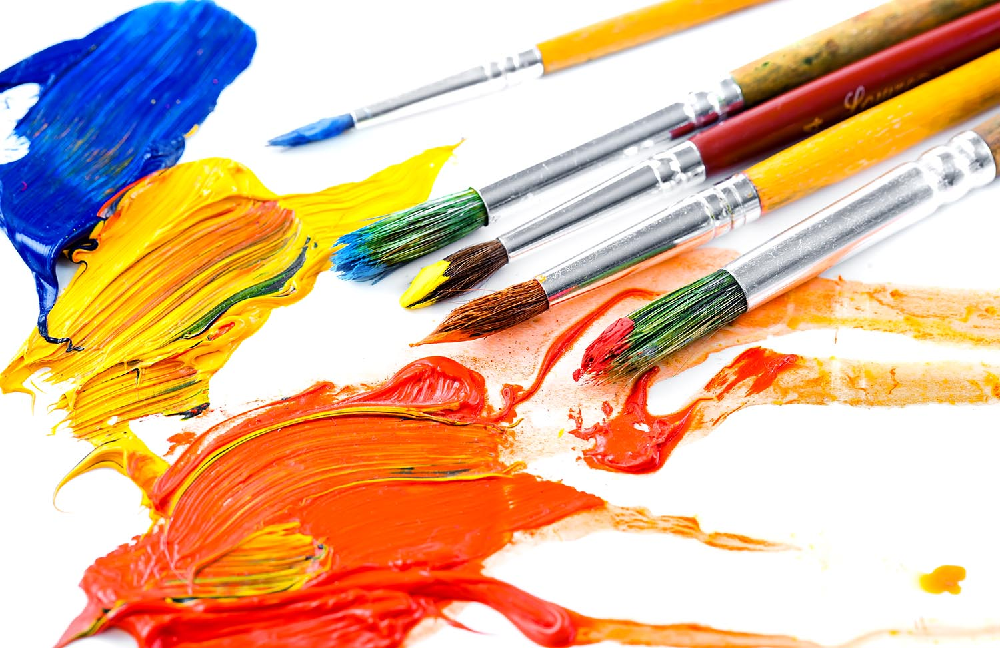
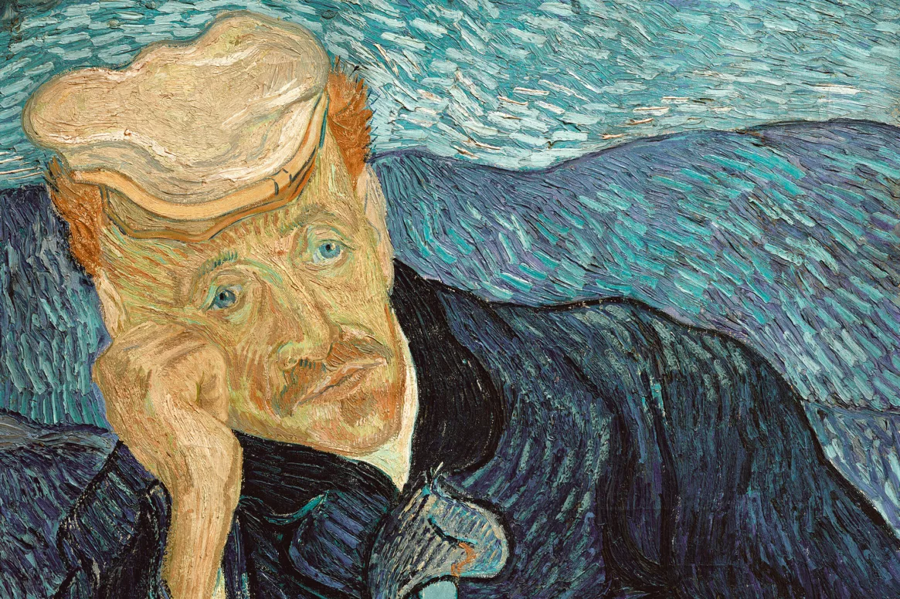
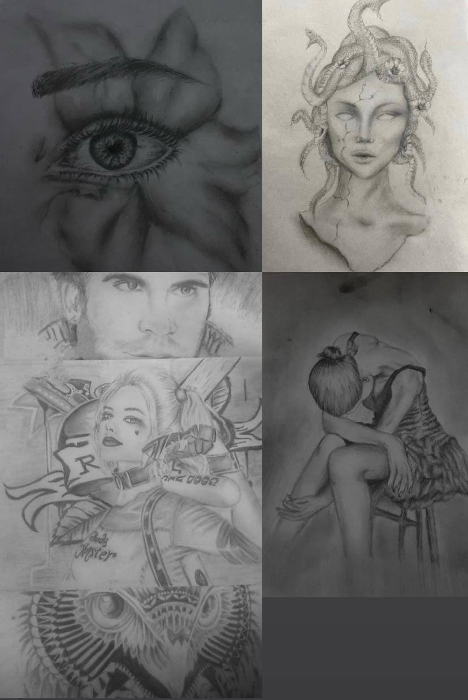

Sulu Boya Tekniğinde İlk Adımlarım

Bu hafta sulu boya tekniğini keşfetmeye başladım. İşte öğrendiğim temel teknikler:
- Renk geçişleri ve katmanlar
- Fırça teknikleri ve su kontrolü
- Kağıt seçimi ve hazırlığı
- Işık-gölge dengesi
Kullandığım Malzemeler:
- Winsor & Newton sulu boya seti
- Arches sulu boya kağıdı (300g)
- Çeşitli kalınlıkta fırçalar
Daha detaylı teknik bilgiler için Artists Network
sayfasını inceleyebilirsiniz.
Sulu Boya
Teknik
Malzeme
Van Gogh İzlenimlerim

Van Gogh İşte en sevdiğim eserleri:
- Ayçiçekleri (1889)
- Yıldızlı Gece (1889)
- Patates Yiyenler (1885)
- Yatak Odası (1888)
Sanatçının hayatı ve eserleri hakkında daha fazla bilgi için
Van Gogh Müzesi
websitesini ziyaret edebilirsiniz.
Müze
Van Gogh
Empresyonizm
Benim Karakalemim

Burda da kendi karakalem maceralarımı paylaşıyorum ve ihtiyacınız olan şeyler:
- Bir tane kalem
- Kağıt
- İlham veren bir müzik
- Ve biraz zaman
Başlangıç seviyesi için harika ipuçları bulabileceğiniz
Karakalem.info
kesinlikle öneririm.